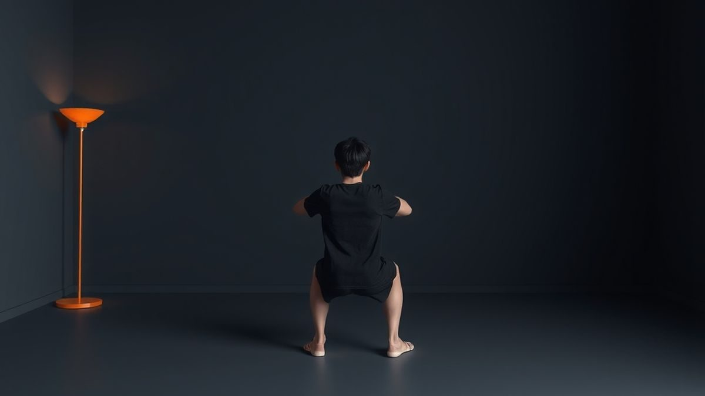
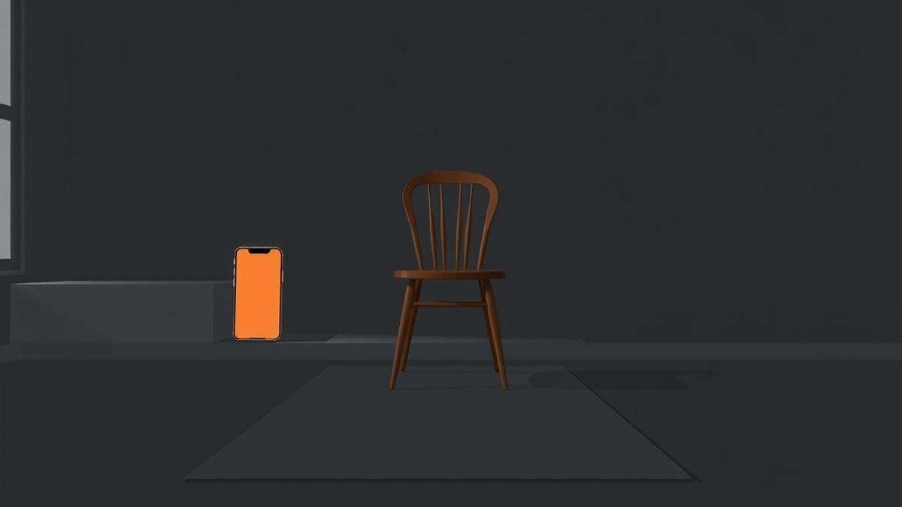

Bodyweight Squat Form: 6 Steps and the 5 Mistakes to Fix
Bodyweight squat form in six steps, the five mistakes nearly everyone makes and how to fix each, what to do about knees past toes, and easier versions.


TL;DR
- Feet slightly wider than shoulders, brace, sit back and down, knees over toes, as low as you can control, stand up through your whole foot.
- The common faults: knees caving in, heels lifting, back rounding, chest dropping and half reps. Each has a simple fix (table above).
- Knees past your toes is usually fine; knees caving inward is the thing to fix.
- Film three reps from the side and front with your phone to see what you can't feel.
- Can't do a full squat? Start with a chair sit-to-stand and work up. Check with a doctor first if you have an injury, a heart condition or are pregnant.
The kettle clicks on. You've got two minutes, so you do ten squats in the kitchen. They feel fine.
Then you catch yourself in the oven door. Heels up. Knees pointing at each other. Your back curls like you're picking up a dropped key. Rep six looked nothing like rep one.
Most people never get taught a squat. They just copy what they half-remember from gym class, and it works well enough until a knee starts complaining.
Good bodyweight squat form isn't complicated. It comes down to six steps, five common mistakes, and one rule about depth. Here's all of it, plus easier versions if a full squat isn't there yet, and an honest answer to the "knees past toes" question.
Bodyweight squat form: the six steps
Stand somewhere with a little room in front of you. No shoes or flat shoes is easiest.
- Set your feet. Slightly wider than your shoulders, toes pointing forward or turned out a little. Pick whatever feels natural; there's no single correct angle.
- Brace. Take a normal breath and tighten your stomach like you're about to be poked in the ribs. Chest up, eyes forward.
- Sit back and down. Bend at your hips and knees at the same time, as if a chair were behind you. Reach your arms forward for balance.
- Keep your knees over your feet. On the way down, your knees should follow the line of your toes, not cave in toward each other.
- Go as low as you can control. Thighs about parallel to the floor is a common target. If that isn't comfortable yet, stop higher. Heels stay flat.
- Stand up through your whole foot. Push the floor away, breathe out, and finish tall with your hips straight under you.
That's one rep. Mayo Clinic's guidance for this exercise suggests one set of 12 to 15 reps is enough for most people, and to stop when you're tired or your form starts to slip. If you can only do five clean reps, do five.
The five mistakes, and how to fix each
Nearly every bad squat is one of these. Find yours in the table, try the fix, and do three slow reps to feel the difference.
| What you see | What's usually going on | The fix |
|---|---|---|
| Knees cave in toward each other | Hips not working hard enough, or feet too narrow | Widen your stance slightly and think "spread the floor apart" with your feet. Slow down the lowering. |
| Heels lift off the floor | Weight drifts onto your toes; often stiff ankles or calves | Sit your hips back more, keep weight in the middle of your foot, try a slightly wider stance. Squat to a chair until it stops. |
| Back rounds at the bottom | Going deeper than you can control yet | Stop just above where the rounding starts. Brace before every rep. Depth comes with practice. |
| Chest drops toward the knees | Leading with the hips only, like a bow | Arms straight out in front, eyes on a spot at head height, hips and knees bend together. |
| Half reps that barely bend | Afraid of going low, or going too fast | Squat to a chair or couch so you know where the bottom is. Count two seconds on the way down. |
Also: breathe. Plenty of people hold their breath through a whole set. Breathe in on the way down, out on the way up.
Check yourself with your phone
You can't see your own knees while you squat, but your camera can. Prop your phone at about hip height, film three reps from the side and three from the front, then watch them back.

- From the side: are your heels flat? Does your back stay in one line, or curl at the bottom?
- From the front: do your knees track over your toes, or drift inward as you stand?
Delete the clips afterward if you'd rather not keep them. Fix one thing at a time; trying to fix all five at once usually fixes none.
Is it bad if your knees go past your toes?
For most people, no. "Never let your knees pass your toes" is one of the most repeated gym rules, and it's mostly a myth.
Your knees have to move forward somewhat to get low. Mayo Clinic's squat guidance says as much: in a deep squat, your knees will eventually come over your toes. Its cue for beginners is to sit back as if into a chair, so you can still see your toes when your knees are at about 90 degrees. That's a helpful starting point, not a hard ban.
The best-known study on this is small. In 2003, researchers filmed seven weight-trained men doing barbell squats two ways: normally, and with a board stopping their knees at their toes. Blocking the knees lowered the load at the knee somewhat, but greatly raised the load at the hips, and the men leaned their upper bodies further forward. The authors suggested it may be better to let the knees move slightly past the toes. Seven men with a barbell isn't you in your kitchen, so don't lean on the exact numbers. The direction is the useful part: stopping your knees just shifts the work to your hips and back.
What matters more than how far forward your knees go is where they point. Over your toes, good. Caving inward, fix it.
How deep should you squat?
As deep as you can go with flat heels, a braced back and control. A 2013 review in Sports Medicine looked at more than 160 papers and concluded that deep squats, learned with good technique, don't add injury risk to the knee's passive tissues compared with shallower ones. That's a narrative review, mostly about loaded barbell squats in healthy people, not a trial. It doesn't mean anyone should force depth. It does mean you don't need to fear going below parallel if your body gets there comfortably.
Easier versions: a five-step ladder
If a full squat hurts, wobbles or stalls halfway, don't push through. Start lower on this ladder and move up when you can do 12 clean reps.
- Chair sit-to-stand. Sit all the way down on a sturdy chair, then stand up without using your hands. Use your hands on your thighs if you need to.
- Supported squat. Hold a kitchen counter or a door frame and squat to a comfortable depth, using your arms only as much as you need.
- Box squat. Squat down until you lightly touch a chair or couch, pause without sitting, and stand back up.
- Full bodyweight squat. The six steps above, no support.
- Slow squat. Three seconds down, a one-second pause at the bottom, normal speed up. Harder than it sounds.
Most people who think they "can't squat" can do step one today. Step one, done often, becomes step three faster than you'd think.
Safety notes
- Mild effort, not pain. Burning thighs are fine. Sharp pain in a knee, hip or your back means stop.
- Use a sturdy chair for the easier versions, one that won't slide or tip. Put it against a wall if you're not sure.
- Go easy on your first days. Some muscle soreness a day or two later is normal when you're new. Joint pain, or pain that lasts more than a few days, is a reason to get it checked.
- Check with a doctor first if you have a knee, hip or back injury, a heart condition or high blood pressure, are pregnant, or haven't exercised in a long time. Start with the chair sit-to-stand.
Questions people ask
How many squats should a beginner do?
One set of 12 to 15 clean reps is a good target, and fewer is fine at first. If you want more practice without more soreness, spread small sets across the day instead of one big set; that's the idea behind grease the groove and exercise snacks.
Can you do bodyweight squats every day?
Many people do, especially with easy sets. The U.S. Physical Activity Guidelines recommend muscle-strengthening work on two or more days a week for the major muscle groups, so squats a few days a week already counts for your legs. Take a day off if your knees or thighs feel beat up.
Why do my heels come up when I squat?
Usually because your weight drifts toward your toes, often with stiff ankles. Sit your hips back more, widen your stance a little, and squat to a chair until your heels stay down.
Let your phone ask for the squats
A squat is the easiest exercise to do anywhere: no floor space, no bar, no getting down on the carpet. That's why it works so well as the price of more screen time.
Rep Rot locks the apps you lose hours to until you get up and move. Set a daily limit, and when you hit it, the apps lock until you do a set of squats (or push-ups, sit-ups, pull-ups or a plank), counted by your iPhone's front camera right on the phone. Nothing is recorded or uploaded. It counts reps; it doesn't coach your form, so the checklist above is still on you.

Like any Screen Time limit, it can be worked around by someone determined, and it can't see which apps you picked. What it changes is the default: ten good squats before the next scroll. More on making limits hold in How to Set App Limits on iPhone. Don't rot. Rep instead. Rep Rot has a free plan and a 7-day Pro trial, and it's in testing now: email help@reprotapp.com for early access.
Sources: Mayo Clinic, Squat (video and guidance) (stance, 90-degree cue, knees over toes in a deep squat, one set of 12 to 15); Fry AC, Smith JC, Schilling BK, "Effect of knee position on hip and knee torques during the barbell squat", Journal of Strength and Conditioning Research (2003); Hartmann H, Wirth K, Klusemann M, "Analysis of the load on the knee joint and vertebral column with changes in squatting depth and weight load", Sports Medicine (2013); Physical Activity Guidelines for Americans, 2nd edition (2018).